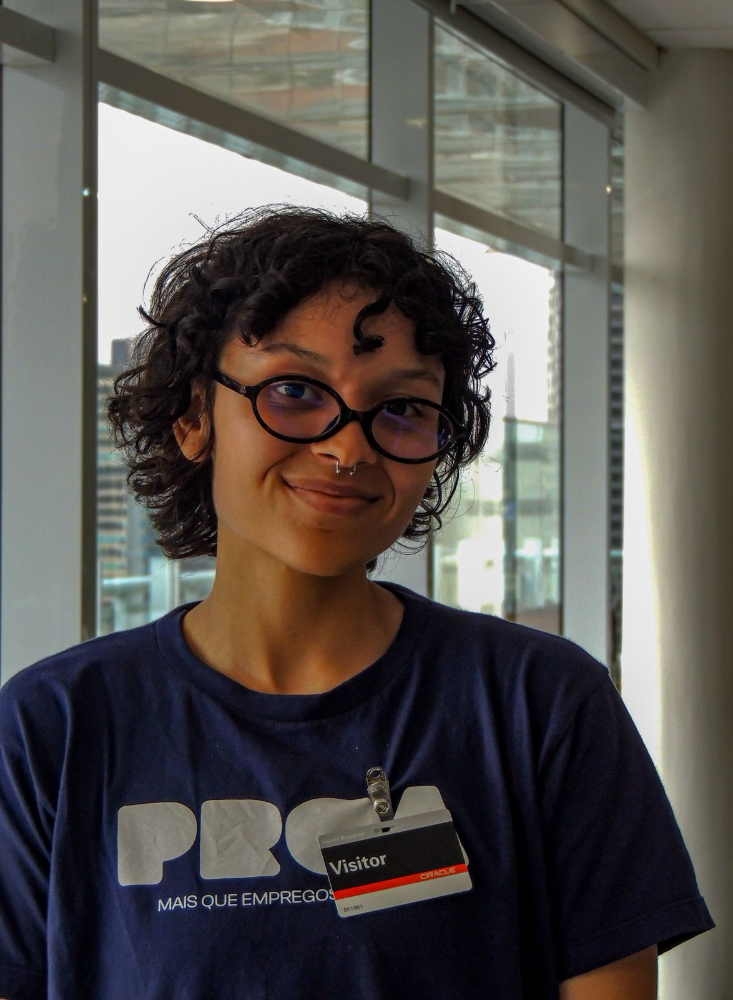

Olá, eu sou o Eduardo!
Eduardo Barros
Eu sou estudante de programação
Sou estudante de programação do Instituto Proa, amante de tecnologia e futuro programador Full-stack.
Meu currículo
Sou estudante de programação do Instituto Proa, amante de tecnologia e futuro programador Full-stack.
Meu currículoDesenvolvedor Full-Stack | UI/UX em formação Acredito que a tecnologia só cumpre seu papel quando une uma interface intuitiva a uma estrutura robusta e eficiente. Atualmente, estou mergulhado no universo do desenvolvimento Full-Stack, equilibrando o rigor do código com o olhar atento ao design.
Saiba mais
Hoje trabalho com Figma para prototipar e construir layouts com precisão, do wireframe ao design final. Uso o Canva para criações mais rápidas e visuais de comunicação, e aplico CSS para dar vida ao que foi desenhado — transformando pixels em código que o usuário realmente interage.
Saiba maisDev Júnior (Back, Front ou Full Stack) Resolve tarefas supervisionado, aprende boas práticas e começa a entregar valor real em times de produto.
Saiba maisDev Júnior (Back, Front ou Full Stack) Resolve tarefas supervisionado, aprende boas práticas e começa a entregar valor real em times de produto.
Saiba maisEstudante do Instituto Proa com foco em desenvolvimento mobile. Construindo base sólida com projetos práticos e aprendendo boas práticas de desenvolvimento.
Ingressar no mercado de trabalho como desenvolvedor júnior, preferencialmente em uma equipe de produto onde seja possível crescer com mentoria. A meta é unir a sensibilidade de UI/UX com a solidez técnica do back end para entregar valor real em times de desenvolvimento.
Dominar tanto a interface do usuário (front-end) quanto a estrutura de servidores e banco de dados (back-end). Com autonomia para resolver problemas complexos sem supervisão constante, constuindo aplicações completas que conectam sistemas e a lógica de negócios à experiência final
Consolidar a trajetória como desenvolvedor Full Stack Sênior, com domínio completo entre front end e back end. O objetivo é ser um profissional capaz de arquitetar soluções robustas, liderar decisões técnicas e entregar produtos que unem performance, escalabilidade e excelente experiência do usuário.
Ser o profissional responsável por ensinar desde a lógica básica de algoritmos até o desenvolvimento de softwares complexos. Orientando na escolha e no aprendizado de linguagens (como Python, Java e JavaScript), além de preparar o aluno para o mercado de trabalho através de projetos práticos e versionamento de código (Git/GitHub).